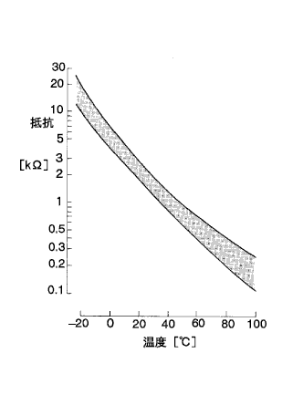
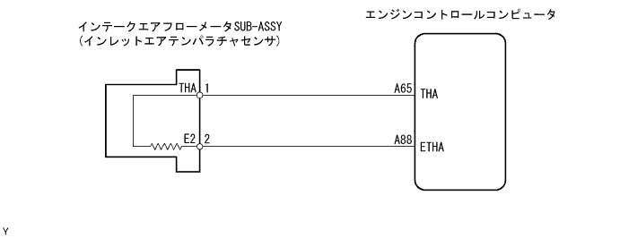
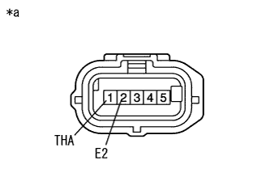

DTC P0112/24 Intake Air Temperature Sensor Circuit (Low) |
DTC P0113/24 Intake Air Temperature Sensor Circuit (High) |

| DTC No. SAE/TCCS | DTC Detection Conditions 1. Diagnosis conditions 2. Malfunction status 3. Malfunction duration 4. Other | Inspection Area |
|---|---|---|
| P0112/24 |
|
|
| P0113/24 |
|
|

| Step 1 | Read TaSCAN Data (Intake Air Temperature) |
Connect SST (TaSCAN) to DLC3.
Turn the IG ON and, with the engine stopped, read the intake air temperature displayed on the SST (TaSCAN).
| Tester Display | Proceed to |
|---|---|
| -40°C | A |
| 140°C | B |
| Same as ambient temperature | C |
|
| ||||
|
| ||||
| A | |
| Step 2 | Read TaSCAN Data (Wire Harness Open Circuit Inspection) |
 |
Connect SST (TaSCAN) to DLC3.
Disconnect the intake air flow meter sub-assembly connector.
Using SST (diagnosis check wire No.2), connect between terminals 1 (THA) - 2 (E2) of the intake air flow meter sub-assembly.
Turn IG ON.
Read the intake air temperature displayed on the SST (TaSCAN).
| *a | Front view of wire harness connector (to Intake Air Flow Meter Sub-assembly) |
|
| ||||
| OK | ||
| ||
| Step 3 | Inspect Wire Harness and Connector (Engine Control Computer - Intake Air Flow Meter Sub-assembly) |
for reference.Disconnect the intake air flow meter sub-assembly connector and connector A of the engine control computer.
Using SST (Toyota electrical tester), measure the resistance between the intake air flow meter sub-assembly and engine control computer vehicle side connector terminals. (For Terminals of ECU, see)
| Tester Connection Engine control computer vehicle side connector - Intake air flow meter sub-assembly vehicle side connector | Condition | Standard |
|---|---|---|
| A65(THA) - 1(THA) | Always | Below 1 Ω |
| A88(ETHA) - 2(E2) | Always | Below 1 Ω |
|
| ||||
| OK | ||
| ||
| Step 4 | Read TaSCAN Data (Wire Harness Short Circuit Inspection) |
Disconnect the intake air flow meter sub-assembly connector.
Connect SST (TaSCAN) to DLC3.
Turn IG ON.
Read the intake air temperature displayed on the SST (TaSCAN).
|
| ||||
| OK | ||
| ||
| Step 5 | Inspect Wire Harness and Connector (Engine Control Computer - Intake Air Flow Meter Sub-assembly) |
for reference.Disconnect the intake air flow meter sub-assembly connector and connector A of the engine control computer.
Using SST (Toyota electrical tester), measure the resistance of the engine control computer and intake air flow meter sub-assembly vehicle side connector terminals. (For Terminals of ECU, see)
| Tester Connection Engine control computer vehicle side connector and intake air flow meter sub-assembly vehicle side connector - Other terminals and body ground | Condition | Standard |
|---|---|---|
| A65 (THA) and 1 (THA) - Other terminals and body ground | Always | 10 kΩ or higher |
|
| ||||
| OK | ||
| ||